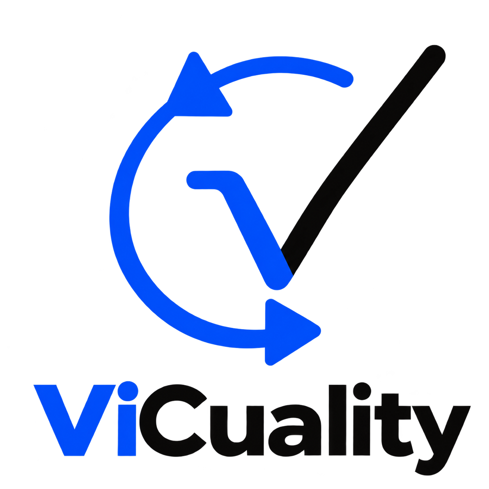

vi
cuality
Gestion de la calidad
▸
fundamentos
técnicas de aseguramiento
herramientas
Procesos de desarrollo de software
Metodologías en detalle
recursos y aprendizaje
Funcionalidad adicional JS
secciones adicionales
Bienvenidos a vi cuality
Estamos para ayudarte a descubrir conocimientos sobre la gestion de calidad de software, aprender nuevos conceptos y metodologias.
Gestion de la calidad
Metodologias en detalle
Procesos de desarrollo de software
Recursos y aprendizaje
Funcionalidad adicional JavaScript
Inicio